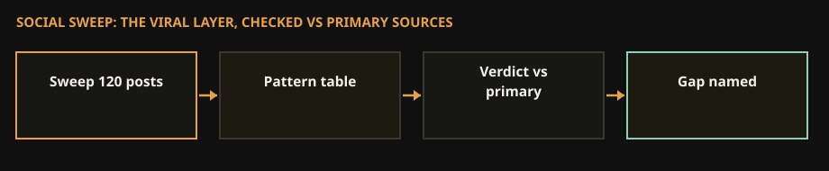

Social Sweep: the Viral Layer, Checked vs Primary Sources
Instagram, Threads, and Facebook swept on 20 November 2026 for agent workflow posts: 120 posts pulled, the top workflow items read as summaries by the platform index. Each viral pattern gets a verdict vs the primary sources in the deep pages. TikTok stands as an open gap, with the reason named.

What the viral layer repeats
One fact dominates the sweep: the most shared workflow content on social platforms recirculates the primary sources in this guide. A six slide carousel of Cherny tips holds 22,000 likes. A Facebook copy of the same carousel holds 890. A reel that walks his setup holds 3,500. The primary thread holds the detail; the copies hold the reach. Read the copies for what the crowd values, and the primary text for what to do.
Pattern table: viral claim vs primary record
Pattern (top social form) Primary verdict
Omega setup: top model as Real shape, creator grade.
orchestrator, cheap sub agents, Matches Anthropic swarm design
verify loops, compact at 40 to and Cherny fleet. The self
60 percent, self rewriting rewriting skills part has no
skills (reel, 4.7K likes) primary backing. Risk: a skill
that edits itself breaks the
audit trail. Use versioned
skills with human review.
5 levels ladder: Prompt 2x, A teaching frame, not a source
Skill 5x, Skill Chain 10x, claim. The order matches the
Agent 20x, Agent Team 50x guide path: prompts, skills,
(carousel, 19K likes) agents, teams. The multipliers
are marketing numbers. No
primary source states them.
Loop, goal, schedule trio Real commands, per the current
for unattended runs best practice doc on the
(reel, 5.2K likes) Anthropic deep page. The reel
adds no limits. The doc adds
the five unattended answers
and stop caps. Use the doc.
Model pick by task tier Real practice. Cherny and the
(reel, 17K likes) swarm post both set cheap
models for sub agents and the
top model for lead work.
Dynamic Workflows explainers Real feature class. The YC
(2 reels, 8.5K and 1.4K) talk names the trigger words
and the fan out, verify, fan
out shape. Social adds reach,
no new mechanics.
Memory file warnings Real risk, named in the round
(reel, 1.7K likes) 3 Reddit discipline thread:
resident rule files tax each
turn and rot per model era.
Keep only earned lines.
5 agents, 0 staff, night Existence grade only: one reel,
shift business (reel, low 69 likes, no system detail.
reach) The Tan and Sanchez deep
pages hold the checked forms
of this claim.
Three social only finds worth a test
- Auto compact thresholds: the Omega reel sets context compaction at 40 percent for small tasks and 60 percent for large ones. No primary source in the sweep names a number. Test both on your long lanes and keep the one that holds quality.
- Three ways to run agents, from a Charlie Hills carousel: the slide set teaches run modes as a choice per task. The primary form of the same idea sits in the best practice doc: session, worktree fleet, and scripted print mode, each with its own stop form.
- The project management feel: a Threads post by a known engineering voice (700 likes) states the tool feels less like pair work with an expert and more like project management of an expert. The Lenny transcript says the same in full: the job moved to task design, review, and steering. Social confirms the shift is felt wide, not only at labs.
Top posts pulled, with links
- Cherny tips carousel, 22K likes. The primary thread in social form.
- Claude Skills tutorial, 33K likes. Skills as the unit of reuse.
- 5 levels of Claude Code carousel, 19K likes. The maturity ladder frame.
- Omega setup reel, 4.7K likes. Orchestrator plus cheap sub agents.
- Loop, goal, schedule reel, 5.2K likes. The unattended trio.
- Isenberg plugin reel, 8.9K likes. A top model plus three named plugins.
- Cherny own Threads post, 5.5K likes. His setup intro in his own words.
- Workflow cheatsheet infographic, 2.9K likes. Setup, files, skills, hooks, memory in one image.
- Cheat sheet after 6 months carousel. Practitioner tips in slide form.
- Usage limit reel, 1.2K likes. Three techniques to stay under caps.
The TikTok gap, stated plain
No TikTok lane ran in this sweep. This machine holds no TikTok connector, and the agent-reach TikTok path needs a ScrapeCreators device signup that stands open from the October setup. TikTok workflow content exists, per cross posts of the same creators on Instagram, but no TikTok post was pulled, read, or counted here. The gap closes when the signup lands or a TikTok connector connects. No TikTok claim in this guide rests on a TikTok read.
How to use the viral layer
Use social posts as a demand signal and a teaching frame source. The ladder frame and the trio naming teach well. For any act that spends money, merges code, or sends a message, the rule stands: the primary source or your own test decides, never a reel. Each pattern in the table names its primary home in the deep pages.
Apply this to your work: your own saved posts hold the same split. Your 930 plus Instagram saves carry strong frames and weak mechanics in one feed. The deep pages in this guide give you the filter: a save earns a workflow slot only when a primary source or your own run backs its mechanics. Run the Omega compact test on one lane this week, since it is the one social claim with a cheap, clear test and no primary answer.
Visual map of this page
Two views of one page: a Mermaid flow for work order, rendered by the local Mermaid library in this folder, and a markmap for concept groups.
Mermaid source, for offline read
flowchart LR
A[Social sweep: IG, Threads, FB] --> B[Top workflow posts]
B --> C[Pattern list]
C --> D{Verdict vs primary}
D -->|backed| E[Use with primary text]
D -->|frame only| F[Teach with it, test first]
D -->|no source| G[Gap list]How to read the flow diagram. Step 1: start at the first box. Step 2: follow each arrow to the next stage. Step 3: at a branch box, read both paths before a choice. Step 4: a loop arrow means work returns for one more pass vs a test.
Markmap: concepts on this page
- Social Sweep: the Viral Layer, Checked vs Primary Sources
- Recirculation
- Cherny carousel 22K
- Copies hold reach
- Frames
- 5 levels ladder
- Loop goal schedule trio
- Gaps
- TikTok lane open
- Night agency reel thin
- Recirculation